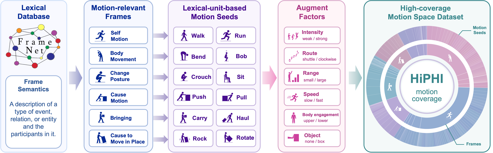

Systematic motion-space expansion
FrameNet frames and lexical units become scalable Frame–LU motion seeds instead of one-off scripts.
Overview
HiPHI turns motion capture into motion-space design. FrameNet-guided motion seeds systematically expand across direction, speed, amplitude, posture, body-part involvement, and object/contact conditions—creating broad, repeatable coverage at unprecedented scale.
FrameNet frames and lexical units become scalable Frame–LU motion seeds instead of one-off scripts.
Synchronized human motion, object trajectories, and object meshes preserve the full physical interaction.
Coverage, quality, tracking, scaling, and real-world G1 deployment connect data directly to humanoid learning.
Motion Atlas
Explore the dataset-balanced shared embedding used to compare representative motion datasets under one unified kinematic protocol. HiPHI reaches more regions and distributes motion more broadly across them.
Frame–LU construction
A frame defines an event type and a lexical unit identifies the word sense that evokes it. Every Frame–LU pair becomes a family of motions, expanded across path, direction, speed, rhythm, amplitude, posture, body-part involvement, support, and object/contact conditions.

Select a Frame–LU chip to inspect a representative motion preview.
Physically grounded interaction
HiPHI captures full-body motion together with mesh-level object trajectories, preserving the geometry, load, inertia, resistance, and contact that shape executable humanoid behavior.
Humanoid learning
HiPHI achieves the highest matched-budget tracking success rates and fastest convergence, keeps improving as training data scales from 3 to 300 hours, and transfers to real hardware across running, sitting, crawling, carrying, flipping, and pulling.
Data scaling
Unmirrored HiPHI training data · mean MPJPE across 10 runs · lower is better
Benchmark
HiPHI spans the broadest kinematic region in the benchmark, leads every reported body-motion quality metric, delivers strong human-object geometric consistency, and turns scale into measurable tracking gains.
Lower jerk, acceleration, ground penetration, floating, and support-point drift.
Massive interaction scale with strong non-conflict and near-surface grounding.
Compact numeric tables for exact comparison.
Release
The 617.5-hour release combines high-fidelity BVH motion, synchronized object trajectories and meshes, Frame–LU indexing, natural-language descriptions, and rich metadata in one unified resource for humanoid learning.
ModalityNet Open Research License v1.0 for non-commercial scientific research, education, and evaluation.